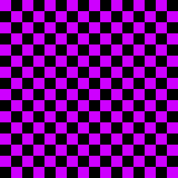

About Me
Hi, I'm Kevin Chang, currently in my third year studying Computer Science at the University of Michigan, with a minor in User Experience Design. I'm proficient in a range of programming languages including C++, C, Python, JavaScript, HTML, CSS, and Verilog. In addition to my studies, I'm deeply passionate about programming. It's not just a skill set for me; it's a genuine interest. I enjoy tackling complex problems and finding elegant solutions through code.
